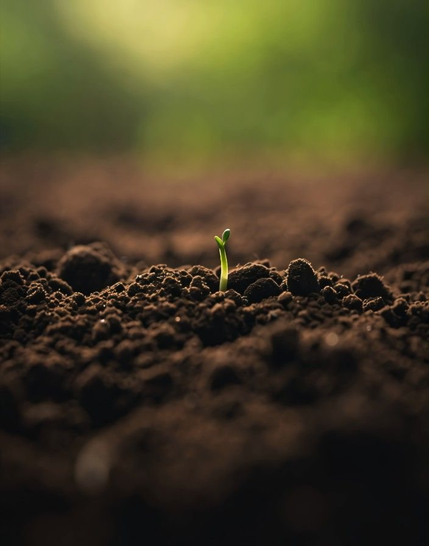

연혁
켜흙토양검정소는 2019년 3월 하곡읍 옛 양잠 창고에 문을 연 비영리 토양 검정소입니다.
연혁
- 2019년 3월
- 하곡읍 옛 양잠 창고를 고쳐 개소 · 기본 5항목
- 2020년 6월
- 유효규산 항목 추가 · 논 시료 접수
- 2021년 4월
- 중금속 4종 분석 시작
- 2022년 9월
- 급행 접수(3일) 시작
- 2023년 3월
- 농업인 검정료 20 % 감면
- 2024년 7월
- 접수번호 조회 화면 운영
- 2025년 5월
- 발광 분광기 교체 · 검출 한계 0.01 mg/kg
- 2026년 3월
- 누적 검정 시료 2만 점

분석실 장비
- 산도 · 전도도 측정기
- 2대 · pH 분해능 0.01 · EC 0~20 dS/m
- 분광 광도계
- 1대 · 파장 190~1,100 nm · 인산 · 규산
- 유도 결합 플라스마 발광 분광기
- 1대 · 칼륨 · 칼슘 · 마그네슘 · 중금속 · 검출 한계 0.01 mg/kg
- 건조실
- 40 ℃ · 선반 240칸
- 분쇄기 · 체
- 2대 · 체 눈 2 mm
- 입도 분석 피펫
- 6조 · 토성 분석
- 분석 인원
- 분석원 4명 · 접수 1명
가상 고지 · 사진 출처
가상의 기관입니다. 값 · 일정 · 성적은 지어낸 것이고, 신청은 전송되지 않습니다. 시비량과 석회 소요량은 단순화한 근사 계산입니다.
- 흙 위에 놓인 삽과 곡괭이 · Pinterest · 라이선스 미확인: 원 게시자 저작물. 요청 시 교체
- 두 손바닥에 묻은 밭흙 · Pinterest · 라이선스 미확인: 원 게시자 저작물. 요청 시 교체
- 흰 판 위에 쏟은 화분 흙과 뿌리 · Pinterest · 라이선스 미확인: 원 게시자 저작물. 요청 시 교체
- 갈아 놓은 흙에서 올라온 새싹 하나 · Pinterest · 라이선스 미확인: 원 게시자 저작물. 요청 시 교체
- 검은 흙 이랑에 줄지어 선 채소 모종 · Pinterest · 라이선스 미확인: 원 게시자 저작물. 요청 시 교체
- 물을 대고 갈아 놓은 논 · Pinterest · 라이선스 미확인: 원 게시자 저작물. 요청 시 교체
- 숲 바닥에 겹으로 쌓인 마른 잎 · Pinterest · 라이선스 미확인: 원 게시자 저작물. 요청 시 교체
- 접어 세운 갈색 종이봉투 · Pinterest · 라이선스 미확인: 원 게시자 저작물. 요청 시 교체